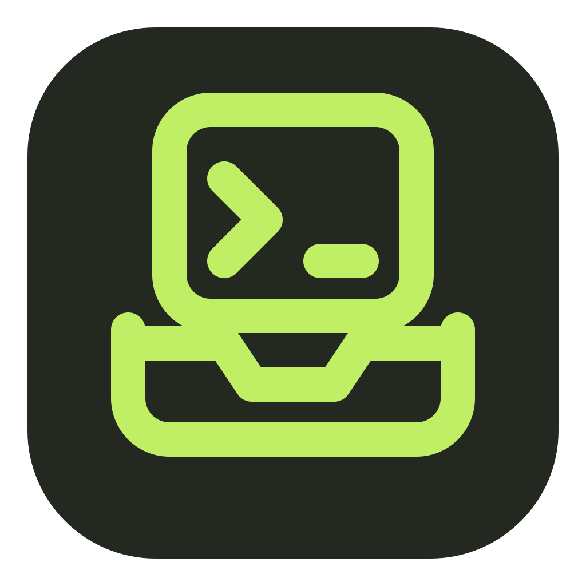

macOS
Apple Silicon (M1 or later)
Download .dmg or the .zip
A desktop companion for the Prime Agent CLI. Browse your sessions, follow agents as they work, and run new sessions from a native window.
Apple Silicon (M1 or later)
Download .dmg or the .zipx64
Ubuntu / Debian .deb AppImageIntel Macs and Windows are not supported yet. All releases
Session Dock uses your Prime Agent sessions, credentials and models. Install the Prime Agent CLI, run prime-agent once, and use /login and /model to set up a provider before opening the app.
Open the DMG and drag Session Dock into Applications. The app is not signed with an Apple Developer ID yet, so the first launch is blocked with a message that Apple could not verify it. To open it:
On macOS 14 and earlier you can instead Control-click the app in Applications and choose Open. Later launches open normally. You do not need to turn off Gatekeeper.
sudo apt install ./Session-Dock-*-linux-amd64.debThen start Session Dock from your applications menu.
chmod +x Session-Dock-*.AppImage
./Session-Dock-*.AppImageAppImages need FUSE 2 (libfuse2 or libfuse2t64 on Ubuntu-based systems).
Compare shasum -a 256 <file> (macOS) or sha256sum <file> (Linux) with the matching line in SHA256SUMS.